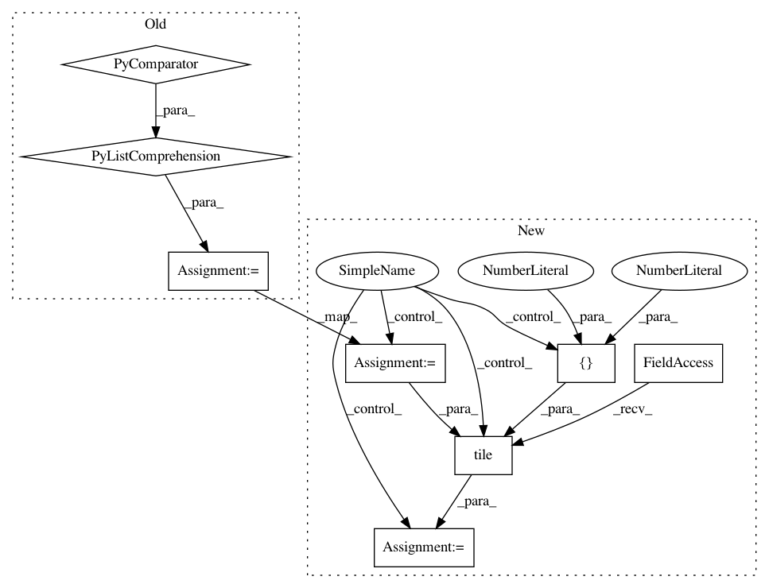

d7d183281a6c25be0d5556bcec6b54615adb7b34,models/official/detection/serving/inputs.py,,raw_image_tensor_input,#Any#Any#Any#,59
Before Change
if batch_size == 1:
images_info = tf.constant([image_info_per_image], dtype=tf.float32)
else:
images_info = tf.constant(
[image_info_per_image for _ in range(batch_size)],
dtype=tf.float32)
images = placeholder
return placeholder, {"images": images, "image_info": images_info}
After Change
if batch_size == 1:
images_info = tf.constant([image_info_per_image], dtype=tf.float32)
else:
images_info = tf.constant([image_info_per_image], dtype=tf.float32)
if batch_size is None:
batch_size = tf.shape(placeholder)[0]
images_info = tf.tile(images_info, [batch_size, 1, 1])
images = placeholder
return placeholder, {"images": images, "image_info": images_info}
In pattern: SUPERPATTERN
Frequency: 3
Non-data size: 8
Instances
Project Name: tensorflow/tpu
Commit Name: d7d183281a6c25be0d5556bcec6b54615adb7b34
Time: 2020-06-01
Author: gardener@tensorflow.org
File Name: models/official/detection/serving/inputs.py
Class Name:
Method Name: raw_image_tensor_input
Project Name: tensorflow/tpu
Commit Name: 0638b9c86cfec273b2e5799aea281ffa74d9161d
Time: 2020-05-12
Author: pengchong@google.com
File Name: models/official/detection/serving/inputs.py
Class Name:
Method Name: raw_image_tensor_input
Project Name: tensorflow/tpu
Commit Name: ab6bcc4f147c95d5c7b2336a883be435cff5970a
Time: 2020-07-06
Author: pengchong@google.com
File Name: models/official/detection/serving/inputs.py
Class Name:
Method Name: raw_image_tensor_input